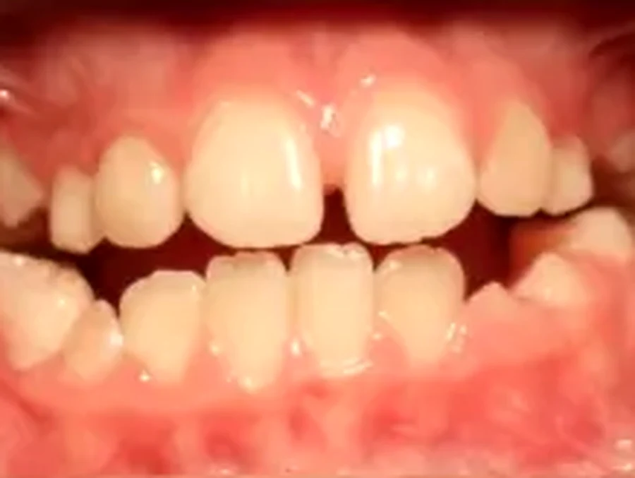
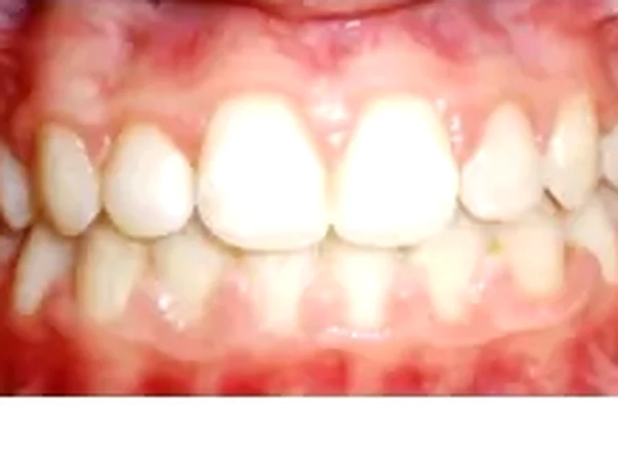

Ortodonzista specialista
La dott.ssa Francesca Gibelli ha la specializzazione in Ortognatodonzia (Università di Milano, 70/70) e il perfezionamento universitario in tecnica Invisalign. Dal 2003 si occupa esclusivamente di ortodonzia.
Invisalign parte da una scansione tridimensionale della bocca e da un piano di trattamento costruito al computer. Prima che tu indossi la prima mascherina, l'ortodonzista ti mostra a schermo la sequenza completa degli spostamenti e il risultato finale: solo a quel punto decidi se cominciare.
Si parte da un'impronta di precisione, che viene scansionata per ricavare un modello 3D della tua bocca. Su quel modello la dott.ssa Gibelli dà le istruzioni sullo spostamento dente per dente; dopo alcune revisioni si arriva al piano definitivo e si producono le mascherine: tutte insieme, dalla prima all'ultima. Le cambi ogni due settimane: ciascuna sposta i denti di una frazione di millimetro.
Le togli. Mangi quello che vuoi, ti lavi i denti normalmente, e nelle occasioni in cui non le vuoi indossare le metti in tasca. Il rovescio della medaglia è che funzionano solo se le porti: 20–22 ore al giorno. È l'unico vero requisito del trattamento.
Per alcuni casi, e in particolare in età evolutiva, l'apparecchio fisso o gli apparecchi funzionali restano la scelta migliore. E prima di un impianto può servire un'ortodonzia pre-implantare per riportare i denti nella posizione corretta. Si sceglie in visita, non per moda.
Ogni allineatore applica una forza leggera e continua. Il movimento è progettato al millesimo prima ancora che tu indossi il primo.
Valutazione, fotografie, teleradiografia del cranio e panoramica: tutte eseguite in studio. Si stabilisce se Invisalign è indicato o se serve altro.
Il piano di trattamento virtuale. Vedi a schermo il tuo sorriso finale e la sequenza dei movimenti. È il momento in cui decidi, con un'informazione che l'ortodonzia tradizionale non può darti.
Arrivano tutte insieme. Le cambi ogni due settimane a casa. I controlli in studio sono diradati: meno appuntamenti dell'apparecchio fisso.
Alla fine serve mantenere il risultato. Senza contenzione i denti tendono a tornare indietro: è la parte del trattamento che si sottovaluta più spesso.
Trascina il cursore sull'immagine per confrontare la situazione iniziale con il risultato. Pubblichiamo soltanto i casi documentati con protocollo fotografico completo e con il consenso scritto del paziente: per questo ne trovate pochi, e per questo quelli che trovate sono autentici.


Prima DopoAffollamento e morso aperto anteriore · fine trattamento
Casi reali trattati presso l'Ambulatorio Dentistico Dr. Piccardo U. S.r.l. I risultati variano da paziente a paziente in funzione del quadro clinico di partenza e non sono garantiti. Immagini pubblicate a scopo di informazione sanitaria ai sensi dell'art. 9 della L. 24/2017, previo consenso informato scritto degli interessati.
Tre elementi concreti, che potete verificare uno per uno.
La dott.ssa Francesca Gibelli ha la specializzazione in Ortognatodonzia (Università di Milano, 70/70) e il perfezionamento universitario in tecnica Invisalign. Dal 2003 si occupa esclusivamente di ortodonzia.
Il trattamento è dilazionabile in 36 rate a partire da 125 € al mese con il finanziamento a tasso 0. Nessun anticipo obbligatorio.
Invisalign è supportato da studi clinici pluriennali e oltre 2 milioni di pazienti trattati. Molte aziende hanno provato a copiarne il meccanismo con risultati diversi: qui si usa il sistema originale, con medico certificato.

Ortodonzista · Specialista in Ortognatodonzia · Perfezionata Invisalign
Specializzazione in Ortognatodonzia con 70/70 a Milano e perfezionamento universitario in tecnica Invisalign. Dal 2003 si occupa esclusivamente di ortodonzia.
Le voci qui accanto sono quelle che riguardano questo trattamento e sono le stesse che trovate nel tariffario completo. Dopo la prima visita ricevete un preventivo personalizzato in forma scritta, con le lavorazioni una per una e il totale: quella cifra resta valida fino alla fine della cura.
IVA esente ai sensi dell'art. 10 DPR 633/72. Detraibile al 19% nella dichiarazione dei redditi.
Sono quelle che arrivano in prima visita e al telefono, con le risposte che diamo di persona.
Sono trasparenti e aderenti. A distanza di conversazione, nella grande maggioranza dei casi non si notano. Su alcuni denti vengono applicati piccoli attacchi in composito del colore del dente, che servono a far presa: quelli sono leggermente visibili da vicino.
Dipende dal caso: da pochi mesi per correzioni limitate fino a 18–24 mesi per i casi complessi. Il numero esatto di mascherine, e quindi la durata, li conosci al ClinCheck: prima di firmare qualsiasi cosa.
Nei primi due giorni dopo ogni cambio si avverte una pressione: è il segnale che il dente si sta muovendo. Si tratta di un indolenzimento sordo, che si attenua nel giro di poche ore. Molti pazienti la descrivono come più tollerabile dell'apparecchio fisso.
Invisalign è nato proprio per gli adulti. Oggi è applicabile anche agli adolescenti, ma la maggior parte dei pazienti che trattiamo ha fra i 25 e i 55 anni. Non esiste un'età oltre la quale i denti non si muovono più: esiste la parodontite, che va esclusa prima.
Sì, sempre. E devi rimetterle subito dopo aver lavato i denti. Bevi solo acqua con le mascherine indossate: bevande calde o zuccherate le deformano o le macchiano.
Si passa alla successiva o si torna alla precedente a seconda del punto del trattamento, e in caso si richiede la sostituzione. Non è un dramma, ma va segnalato subito: non improvvisare.
Faccette sottili come una lente a contatto e sbiancamento professionale. L'obiettivo è che sembrino veri.
Un'ora ogni sei mesi con igienisti laureati. L'unico trattamento che fa risparmiare invece di costare.
La prima volta non si cura niente: si guarda, si conta, si torna. Perché voglia tornarci anche fra vent'anni.
Centodieci euro comprendono l'esame completo della bocca, le radiografie necessarie, la diagnosi e un piano di cura consegnato per iscritto, con i costi già indicati. Da quel momento sai a cosa vai incontro.
Lunedì – Sabato · 8:00 – 20:30 · Via Maragliano 5, Genova · 3 posti auto gratuiti